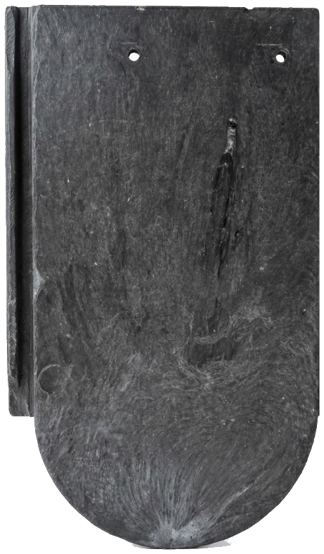
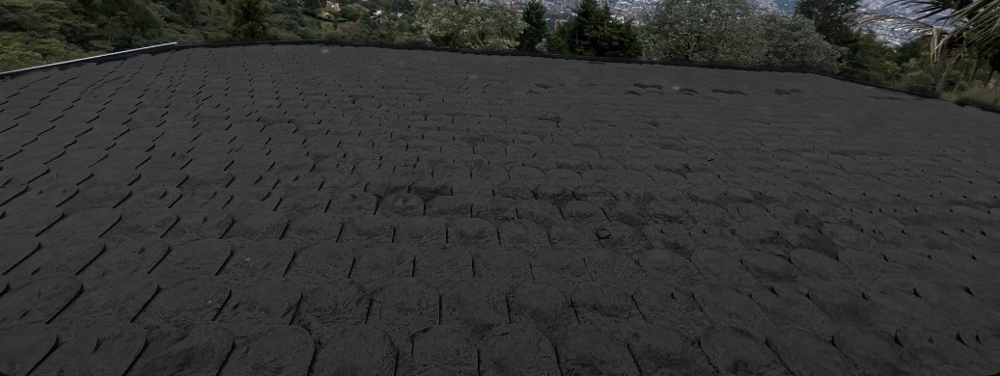
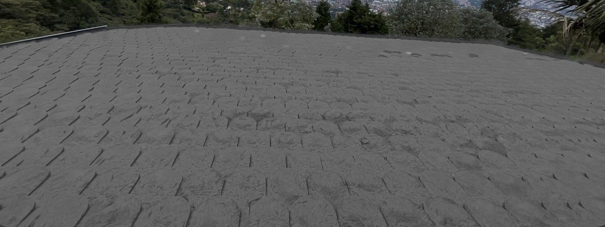

Blindaje total
¿Granizo? ¿Pisar el techo? ¿Golpes? Nuestras tejas absorben el impacto sin quebrarse. Cero mermas en obra.
17 añoscomprobados sin una teja rota

La primera cubierta de polímero recuperado diseñada para durar 500 años.
No se quiebran con el granizo. No se oxidan. No absorben agua.
Pero las tejas de barro y fibrocemento la tienen, por una falla de diseño: son frágiles.
Con el granizo, en el transporte o cuando alguien se para encima. Muchas llegan rotas a la obra.
Y detrás de la humedad llegan el moho y las goteras que dañan tu casa por dentro.
El barro carga cerca de 44,5 kg por m². Tu estructura tiene que ser más grande y más cara.
Todo lo que has comprado en tu vida todavía existe en la tierra.
El plástico es eterno.
En KASTON decidimos que tu techo también debería serlo.
Va a granizar, va a hacer viento y va a llover. Eso no depende de ti.
225 km/h
Vientos que soporta el sistema K-LOCK sin que se vuele una teja. Cada pieza encaja con la siguiente.
Uno que no se quiebra, no gotea y no se vuela, y que protege a tu familia por generaciones.
El plástico es uno de los materiales más resistentes que existen. Irónicamente, lo usamos para cosas desechables.
En KASTON corregimos ese error.
Rescatamos polímeros industriales de alto rendimiento y los convertimos en una cubierta que no se degrada ni se oxida. Al final de su vida, vuelve a ser materia prima.

280 mm 170 mmRectangular, con la punta inferior redondeada. Pieza por pieza forma una piel de escamas que se adapta a la forma de tu techo.
¿Granizo? ¿Pisar el techo? ¿Golpes? Nuestras tejas absorben el impacto sin quebrarse. Cero mermas en obra.
A diferencia del zinc, que convierte tu casa en un horno, nuestro polímero denso aísla mejor la temperatura y el ruido.
Mucho más livianas que el barro o el cemento, reduciendo costos en la estructura de madera o metal de tu casa.
Lo que hace única a KASTON es su ingeniería de conexión. Olvídate de tejas sueltas que vuelan con el viento.
Cada teja tiene una pestaña lateral (macho) y una ranura receptora (hembra). Al unirse, quedan mecánicamente bloqueadas entre sí.
Llega terminada, con una pendiente mínima de 15%.
Una base continua sobre las alfardas.
Lo deja listo tu constructor. Desde aquí empieza KASTON.
Bien derecha: sobre ella se amarra cada teja.
Solo las necesarias, y cada una sellada.
Encajan entre sí con el sistema K-LOCK y se amarran a la malla, una por una.
Cierra la cumbrera, pieza por pieza.
12,6 kg por m², diseñado para durar 500 años.
0% de absorción: el agua se va por la canaleta.
17 años comprobados sin una teja rota.
El K-LOCK y los dos amarres a la malla mantienen cada teja en su sitio.
Un techo. Una sola vez. Para siempre.
Nuestros colores no son pintura superficial. Es el color del polímero fundido, lo que garantiza que no se descascara con el tiempo.
Color estrella. Nuestra firma.
Arquitectura moderna.


Vista de referencia. El tono final puede variar según la luz del día y la pantalla.
Teja Cola de Castor con sistema K-LOCK
Qué significa para ti: no se quiebran con el granizo, soportan que se paren encima de ellas, no se vuelan con vientos de hasta 225 km/h, no se oxidan, no absorben agua y pesan tan poco que tu estructura sale más barata.
Tu estructura debe llegar terminada y con manto asfáltico ya instalado. KASTON no construye estructura ni instala manto: iniciamos la instalación desde ese punto.
Con "Solo tejas" instalas por tu cuenta siguiendo el manual; con "Todo costo" lo hacemos nosotros. KASTON responde por la calidad de sus tejas y de su instalación.
En pocos minutos obtienes un estimativo del precio de tu cubierta KASTON, con toda la información técnica de respaldo.
Escoge cómo quieres tu cubierta: Solo tejas (te damos el suministro y el manual completo de instalación) o Todo costo (las instalamos por ti).
Ingresa el área, el tipo de techo y la pendiente. Con eso calculamos todo al instante.
Ves tu inversión estimada según la modalidad y el área.
Descarga el PDF y, si quieres, agenda tu visita técnica por WhatsApp o correo. Crea una cuenta solo si deseas guardar tu proyecto.
| Criterio | Teja de Barro | Zinc | |
|---|---|---|---|
| Vida útil | 500 años | 20–40 años | 15–30 años |
| Peso | 12,6 kg/m² | ≈ 44,5 kg/m² | ≈ 4 kg/m² |
| Resistencia a granizo | Total | Frágil | Se abolla |
| Absorción de humedad | Cero | Alta | Cero (se oxida) |
| Rotura en transporte | 0% | Frecuente | 0% |
| Aislamiento térmico | Alto | Medio | Mínimo |
| Aislamiento acústico | Alto | Medio | Ruidoso |
| Mantenimiento | Cero | Reemplazo parcial | Pintura / anticorrosivo |
| Sostenibilidad | Recuperado | Alto consumo energía | Minería |
| Sistema de ensamble | K-LOCK | Traslapo simple | Tornillos |
COTIZA TU PROYECTO HOY Y OLVÍDATE DE CAMBIAR EL TECHO POR 500 AÑOS